IGN 26 Docs
Install with Nabau
Nabau puts IGN 26 on your disk in eight steps. Nothing is written until you click Begin installation in step 7.
Nabau opens by itself in the live session. If you closed it, click its icon in the dock.
The eight steps
Language. Choose the language for the installed system and a regional format. The format decides how dates, numbers and money look. The Preview box shows an example. Click Continue.
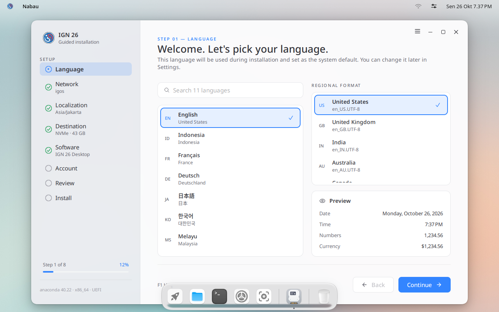
Network. A connection is optional, but it lets Nabau set the clock. Wired connections connect by themselves. Host name is your computer's name on the network; you can leave it.
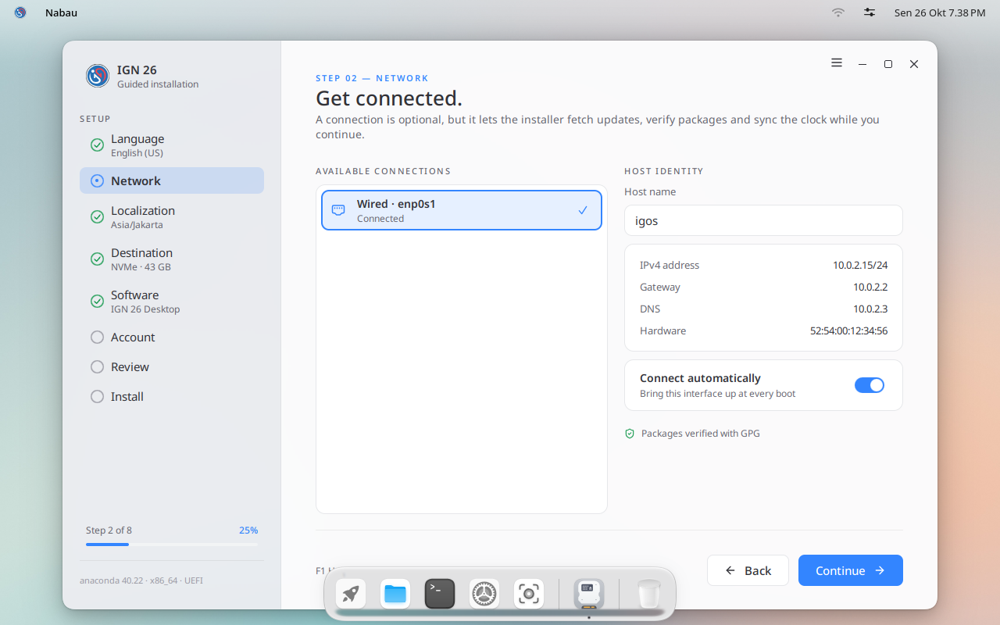
Localization. Choose the keyboard layout you type with. Type a few letters in Test the layout to check it. The time zone is found from your network; change Region and City if it is wrong.
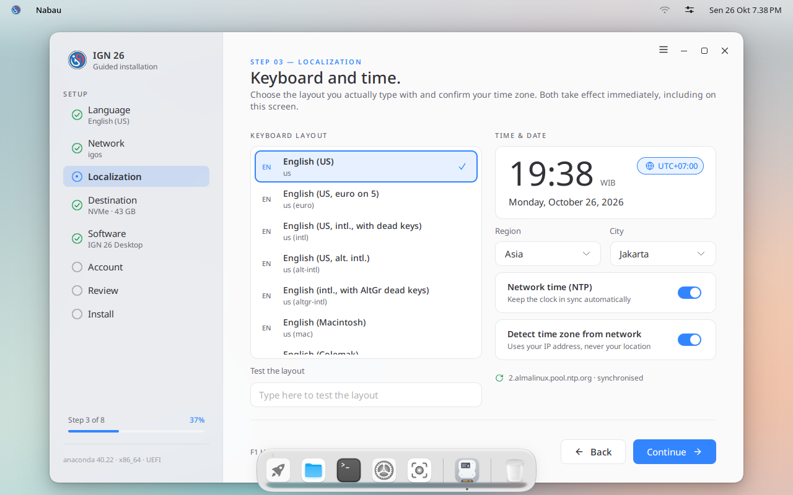
Destination. Select the disk. Keep Automatic unless you know which partitions you want. Turn on Encrypt my data if the computer could be lost or stolen: you will then type a password every time it starts.
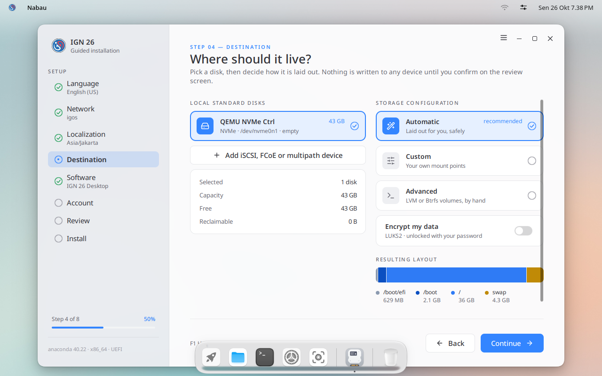
Software. IGN 26 Desktop is the desktop you are using now. The add-ons on the right are optional, and you can install them later with
dnf.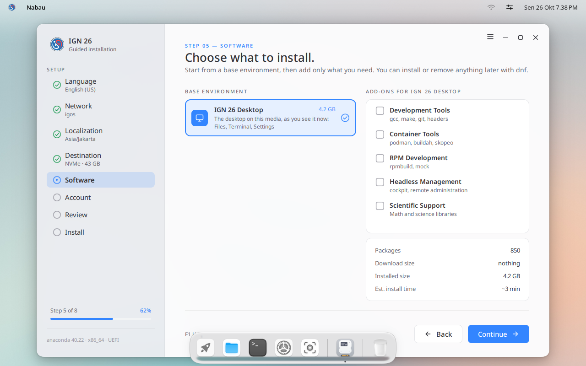
Account. Type your full name; the user name fills in by itself. Type a password twice. Leave Make this user an administrator on, so you can install software and change system settings.
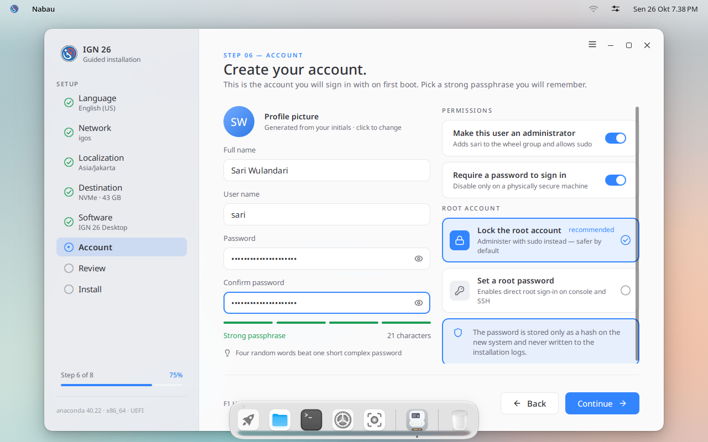
Review. Check the summary. Click Edit on a card to change it. When it is right, click Begin installation. This is the moment the disk is erased.
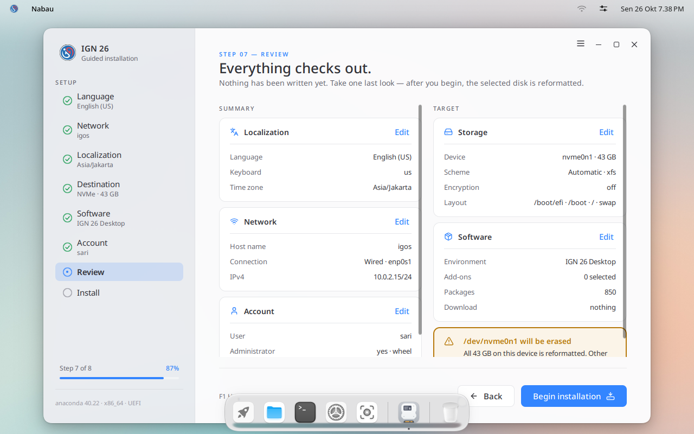
Install. Wait until it finishes. On our test machine it took under two minutes; a slow USB stick or disk takes longer.
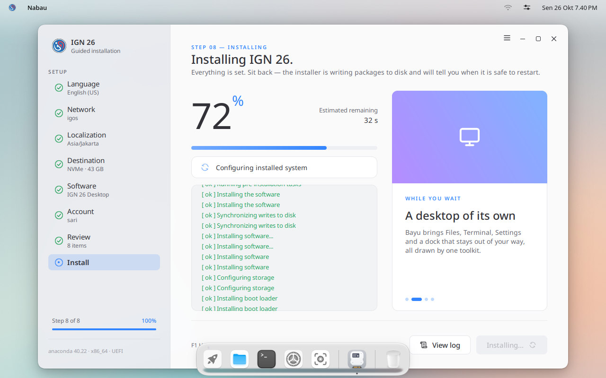


Finish and restart
When you see You're all set, take out the USB stick, then click Restart now.
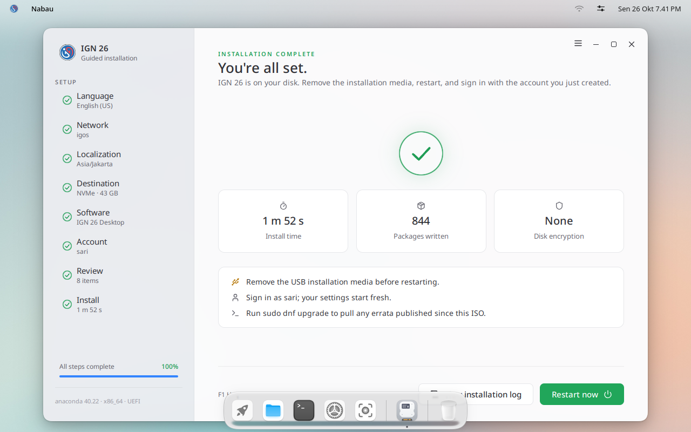
The sign-in screen shows your name. Type your password and press Enter.
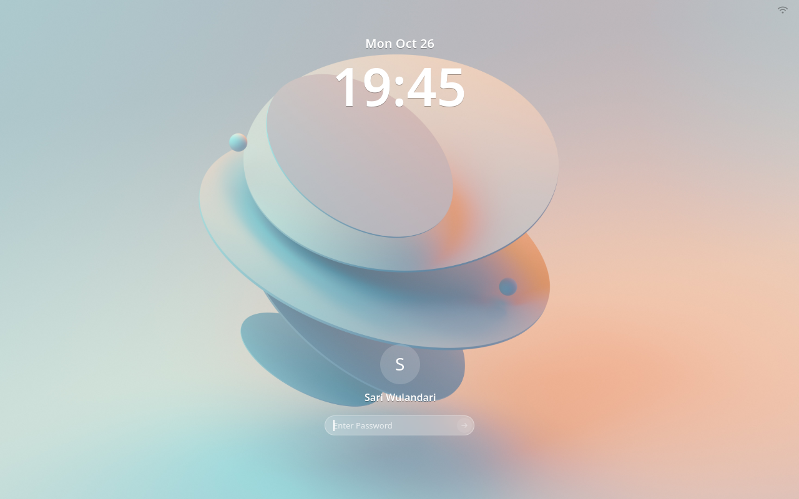
A welcome window offers a short tour of the desktop. Click Start the tour, or Skip.
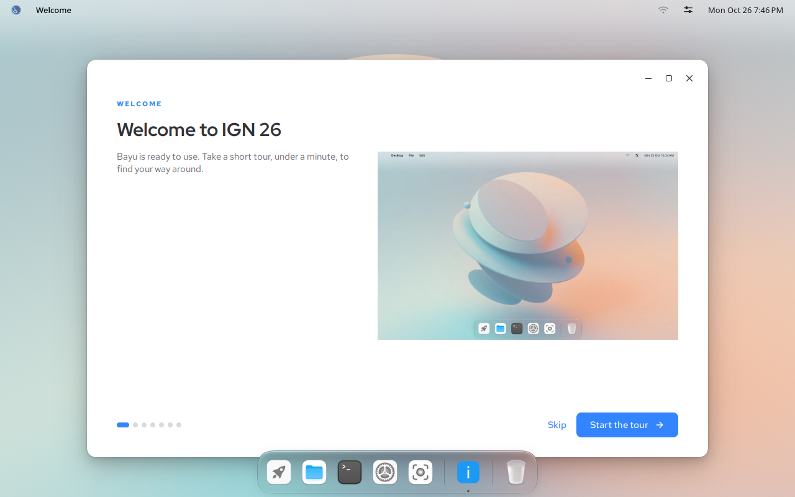


Get the latest updates
The image can be a few days old. Open Terminal from the dock and run:
sudo dnf upgrade
Next: use the desktop.